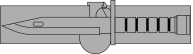

Earn the Expert Soldier Badge — the Army's newest proficiency badge. Demonstrate mastery of warrior tasks, land navigation, physical fitness, and a 12-mile ruck march across five grueling days of testing.
Day 1 is the gate. Candidates must pass the ACFT to standard — no waivers, no exceptions. Immediately following, a written examination tests knowledge of warrior tasks, soldier training publications (STPs), and common doctrine.
This day eliminates candidates who are not physically prepared or who failed to study. The written exam covers the full ESB task list — weapons, first aid, communications, CBRN, and more. It is not a memorization test; it requires understanding of procedures.
Candidates who fail either the ACFT or the written exam are dropped immediately and cannot continue to warrior task testing.
Warrior task testing is the heart of the ESB and where ~40% of all candidates fail. Over two days, candidates rotate through 30+ individual task lanes covering the full spectrum of soldier skills.
Every lane is graded GO / NO-GO with zero deficiency — one critical step missed and the entire task is a failure. Weapons handling covers the M4, M249, M240B, M18 Claymore, and AT4. First aid lanes test Tactical Combat Casualty Care (TCCC) under pressure.
CBRN procedures, communications, demolitions, and react-to-contact drills round out the testing. There are no second chances — candidates must execute every task to standard on the first attempt.
The 12-mile ruck march is the final event of ESB testing. Candidates who have passed everything else must now complete 12 miles with a 35-pound minimum load (dry weight) in under 3 hours. This is a foot march — running is not authorized.
~12% of candidates who make it to Day 5 fail here. Heat casualties are the primary threat during summer testing windows, where black flag conditions can delay or modify the event. Foot care and ruck march training in the weeks before testing are critical.
Successful completion of the 12-mile ruck march earns the Expert Soldier Badge — the Army's mark of warrior proficiency across all MOS.
Winter ESB testing is less common but still conducted at some installations. Cold temperatures create unique challenges — fine motor skills degrade when hands go numb, making weapons assembly and disassembly significantly harder.
Spring is the most popular ESB testing window. Comfortable temperatures mean fine motor skills are not degraded by cold, and heat casualties are rare. Most units schedule their primary ESB testing in spring.
Summer heat is the primary threat during ESB testing. Heat casualties peak on the 12-mile ruck march, and black flag conditions can delay or modify events. Southern installations are especially brutal — Fort Benning, Fort Hood, and Fort Bragg regularly see 90°F+ during testing.
Fall offers ideal testing conditions and is the second most popular ESB window. Cooling temperatures eliminate heat casualty risk while keeping hands warm enough for fine motor warrior tasks. Many units schedule fall testing as a second opportunity.
ESB testing is conducted at the unit level, typically alongside EIB and EFMB testing. Dates vary by installation and unit. Contact your unit S-3 / training office for specific testing windows.
| Window | Typical Months | Notes | Season |
|---|---|---|---|
| Primary | Mar – May | Most units, alongside EIB/EFMB | Spring |
| Secondary | Sep – Nov | Retest window, second opportunity | Fall |
| Summer | Jun – Aug | Select installations, heat risk | Summer |
| Winter | Dec – Feb | Rare, cold-weather installations | Winter |
30+ warrior tasks, zero deficiency. One missed step and you're done. The ESB demands perfection across every soldier skill.
Every failure at ESB has a type. We built a fix for each one.
30+ tasks, zero deficiency. One missed step on one lane and you're done. Practice every task, every step, until it's automatic.
Night nav is the killer. Pace count and terrain association are your lifelines. If you can't find points in the dark, you don't earn the badge.
12 miles, 3 hours, 35 pounds. That's a 15-minute mile pace with weight. If you haven't trained with a loaded ruck, you won't make time.
M4 to M240, know them all cold. Assembly, disassembly, functions check, immediate action — under time, under pressure. No second chances.
Mask drills, decon procedures, NBC-1 reports. CBRN lanes are where overconfident candidates get caught. Rehearse the details.
Minimum scores required, no waivers, no alternate events. Fail the ACFT on Day 1 and you never touch a warrior task lane. Train to exceed, not just pass.
Key Takeaway: Warrior tasks are the #1 killer. With 30+ lanes graded GO/NO-GO at zero deficiency, you must execute every step of every task perfectly. Rehearse until the procedures are automatic — there is no room for thinking on the lane.
I Am an Expert Soldier
The Expert Soldier Badge represents the highest standard of warrior proficiency in the United States Army. Established in 2019, the ESB gives every soldier — regardless of MOS — the opportunity to prove mastery of the fundamental skills that define a professional warfighter.
From weapons handling and land navigation to tactical combat casualty care and the 12-mile ruck march, ESB holders have demonstrated under zero-deficiency standards that they are expert in every task, every discipline, every way. The badge is earned through precision, preparation, and an uncompromising commitment to excellence.
Testing dates, task list updates, gear drops, and tips from ESB holders — straight to your inbox. No spam. Unsubscribe anytime.